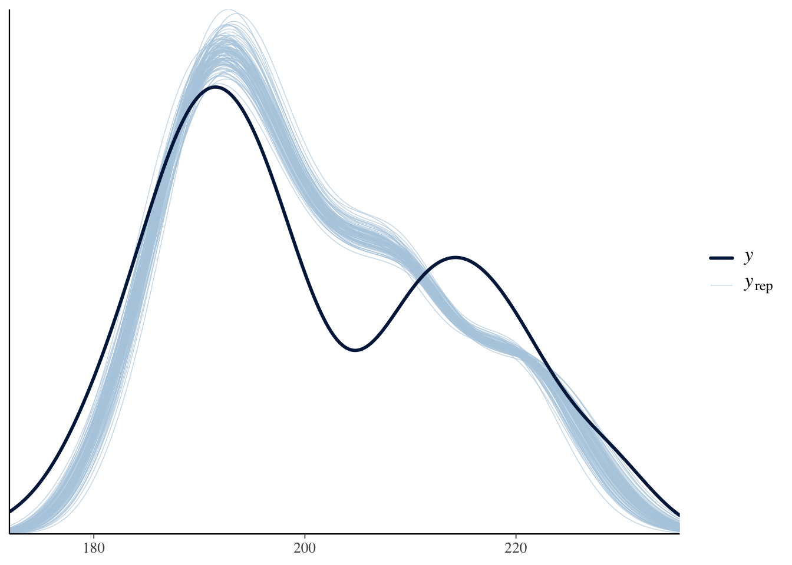
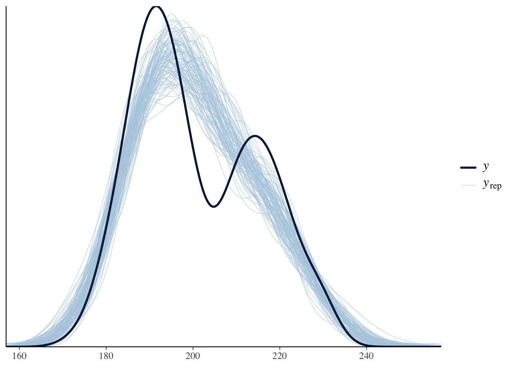
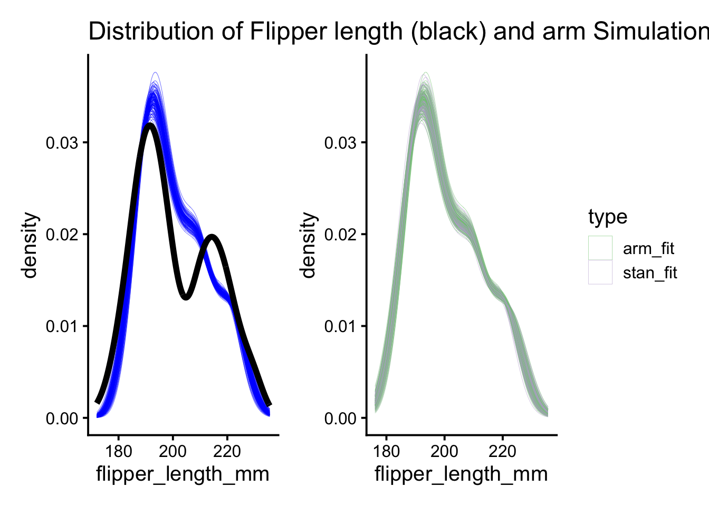
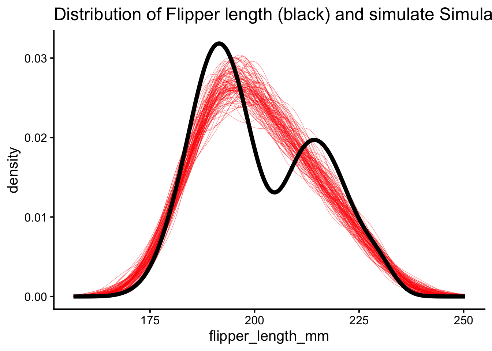
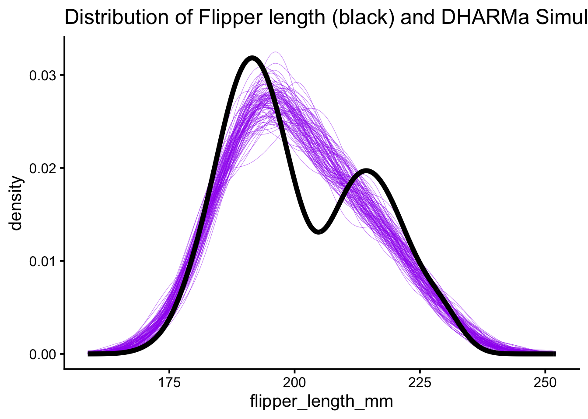

library(rstanarm)
library(palmerpenguins)
#for some manipulations
library(dplyr)
library(tidyr)
#remove the NAs to make the rest smoother
penguins <- penguins %>%
filter(!is.na(flipper_length_mm))
mod_stan <- stan_glm(flipper_length_mm ~ body_mass_g,
data = penguins,
algorithm = "optimizing"
)Marine Data Science for All, Regardless of Backbone!
Simulating “Posterior” Predictions from Non-Bayesian Fits
R
statistics
Today, let us talk simulating the outcomes of a fit model - one fit without Bayesian methods.
As I sat down to review my course materials for my grad Biostats and Computation class this summer - Biology 607 - I was settled in with a sense of calm. I had taught this for years. I knew what I was doing. I had reshaped the class twice, and the student outcomes were on track to be great. Just going to coast through this in Covid times so I could write some papers.
Then the mailman came. And delivered a brand spanking new copy of Gelman et al.’s new Regression and Other Stories.
After getting halfway through, and realizing that day had turned to night, it opened up…. a lot of things. I’ll probably cogitate on them in the future, and suffice to say I have re-written more than I want (and re-arranged - and realized my re-arrangement needs to be re-arranged next time).
But today, let’s talk simulating the outcomes of our model.
One thing I’ve always enjoyed about Bayesian models is the natural connection to simulation. And one way of model checking is to look at how your posterior predictions line up with the actual distribution of your data. For example, let’s look at a trivial example with the super-duper fun Palmer Penguins.
Comparing Posteriors from Bayesian Fits to Observed Distributions of Data
Let’s fit a simple model looking at flipper length as a function of body mass. It’s not going to be perfect, and that’s OK - I want to see some mismatch. We’ll do it with rstanarm (but use the approxmiation for speed).
So, one of the most usefu diagnostics here is to see how well the distribution of the predictions matches, or does not match, the data.
library(bayesplot)
yhat_stan <- posterior_linpred(mod_stan, draws = 100)
ppc_dens_overlay(penguins$flipper_length_mm,
yhat_stan)
Now, note, I used posterior_linpred() - so, this is for fitted values. But things look much the same with prediction intervals - if not a little worse
ypred_stan <- posterior_predict(mod_stan, draws = 100)
ppc_dens_overlay(penguins$flipper_length_mm,
ypred_stan)
What’s great, in both is that you can see the lack of bimodality, and that valley being missing. This is due to not including species. But, it’s SUPER SUPER SUPER useful in trying to diagnose where your model fails.
OK. This is great. I’m going to teach some Bayes. But. What about for those students who don’t want to go Bayes, for whatever reason, but still want access to this awesome machinery?
I was at a bit of a loss. In working with mixed models in the past, to get similar simulations, I’d turn to the merTools package and it’s predictInterval() function that can turn out raw simulations. But - it doesn’t work on lm() or glm() fit models.
Hrm. What to do.
ARM Yourself!
My first inclination was to go old school with the arm package from the original Gelman and Hill which is now being superseeded by this new book and whatever is to come next (which I am already excited for).
arm had a sim() function that could extract simulated coefficients, and then you could be on your merry way yourself. So, let’s fit a model, and then get those fitted simulated values
library(arm)
#let's fit a model from the palmer penguins ####
mod <- lm(flipper_length_mm ~ body_mass_g,
data = penguins)
#get some simulated coefficients using arm::sim() ####
sims <- sim(mod)
#now the model frame
X <- model.frame(mod)
#now get those simulated fitted values
yhat_arm <- coef(sims) %*% t(model.matrix(mod))
#and make it into a nice tidy data frame
yhat_arm <- as_tibble(t(yhat_arm)) %>%
gather(sim, flipper_length_mm)This is great! We can look at how this fits with the distribution of flipper lengths. Moreover, we can compare it to the Bayesian posteriors - we’ll see a difference due to priors, but, it’s informative!
library(ggplot2)
library(patchwork)
theme_set(theme_classic(base_size = 15))
arm_plot <- ggplot() +
geom_density(data = yhat_arm,
aes(x = flipper_length_mm, group = sim),
lwd = 0.1, color = "blue") +
geom_density(data = penguins,
aes(x = flipper_length_mm),
lwd = 2) +
labs(title = "Distribution of Flipper length (black) and arm Simulations")
#reshape posterior predictions and make a running DF
fit_sims <-
as_tibble(t(yhat_stan)) %>%
gather(sim, flipper_length_mm) %>%
mutate(type = "stan_fit") %>%
rbind(yhat_arm %>% mutate(type = "arm_fit"))
compare_plot <- ggplot(data = fit_sims,
aes(x = flipper_length_mm,
group = paste(sim, type),
color = type)) +
geom_density(lwd = 0.1) +
scale_color_brewer(type = "qual")
arm_plot + compare_plot
This is super cool as, 1) we can see that the same problem with the simulated versus observed distributions and 2) the simulations from our lm() and stan_glm() match really nicely.
But Can You Make it Simple?
OK. This is cool. But…. I had to extract coefficients, do the matrix multiplication myself. “Trivial!” you say. But - well, as I get more interesting models that aren’t just lm() fits, it gets harder. And, more importantly, for teaching, this is a path to code confusion for my students. So…. what else is there? I mean, sure, I can write a little function for them:
#can we make a nice little function? ####
predictInterval_lm <- function(mod, n = 100){
sims <- arm::sim(mod, n = 100)
model_mat <- t(model.matrix(mod))
mod_coefs <- coef(sims)
y_sim <- coef(sims) %*% t(model.matrix(mod))
}But - well, that’s a one-shot. They need something more general. We all need something more general.
And so, I tested my google fu. And found…. stats::simulate() At which point I hit myself in the head. Simulated one or more responses from the distribution corresponding to a fitted model object indeed!
Let’s take a look.
# Wait, does stats::simulate work? ####
yhat_simulate <- simulate(mod, nsim = 100)
yhat_simulate <- yhat_simulate %>%
gather(sim, flipper_length_mm)
ggplot() +
geom_density(data = yhat_simulate,
aes(x = flipper_length_mm, group = sim),
lwd = 0.1, color = "red") +
geom_density(data = penguins,
aes(x = flipper_length_mm),
lwd = 2) +
labs(title = "Distribution of Flipper length (black) and simulate Simulations")
Huh. That does not look the same at all. Digging into it with getAnywhere(simulate.lm), it becomes clear that what simulate() is doing is taking fitted values and adding random draws from the error distribution - NOT taking draws from the coefficients to get simulated fitted values. sad trombone. OK, so this isn’t going to work.
Getting to the Core of Our Simulation Problem
So, I went back to the Goog. Poking around and around, I eventually found the excellent coreSim package, that let’s you generate simulated confidence intervals from fit models of many types. Huzzah!
The package has a function to build quantiles of interest based on models using simulation - qi_builder(). While it autimatically generates intervals from simulations and slims them down to a particular interval of interest, by giving a CI of one and specifying that we want the raw simulations with the argument slim = FALSE, we can generate the same simulations as above. We need to reshape and rename the output a bit, but it’ll do!
#what about coreSim? ####
library(coreSim)
#get those simulations, add simulation numbers, and rename
yhat_coresim <- qi_builder(mod, newdata = penguins, ci = 1,
slim = FALSE, nsim = 100) %>%
mutate(sim = rep(1:100, 342)) %>%
rename(flipper_length_mm = qi_) %>%
mutate(type = "coresim_fit",
sim = as.character(sim)) %>%
dplyr::select(-body_mass_g)OK, so, first, how does this compare to the data? And then, how does it compare to other sim methods?
core_plot <- ggplot() +
geom_density(data = yhat_coresim,
aes(x = flipper_length_mm, group = sim),
lwd = 0.1, color = "orange") +
geom_density(data = penguins,
aes(x = flipper_length_mm),
lwd = 2) +
labs(title = "Distribution of Flipper length (black) and coreSim Simulations")
fit_sims <- fit_sims %>%
bind_rows(yhat_coresim)
compare_plot_core <- ggplot(data = fit_sims,
aes(x = flipper_length_mm,
group = paste(sim, type),
color = type)) +
geom_density(lwd = 0.1) +
scale_color_brewer(type = "qual")OK! Nice! Everything lines up, and, while we had to do some manipulation of the qi_builder output (and, really, it needs some work on column names), this was way simpler than the arm solution. And we still see the problems with the mismatch between the model and the data.
But - still, I mean, I could go and re-write some of the coreSim functionality to have simulation numbers. But…. There had to be.
Finding my DHARMa
I’m a HUGE fan of Florian Hartig’s DHARMa package for assessing fit via simulated quantile residuals. Heck, eyeballing the data versus simulated distributions here is exactly what DHARMa is doing! I was working with a colleague on assessing fit in some glmmTMB models when it hit me.
DHARMa calculates simulated values. From which it derives residuals. Which means it’s got a pretty robust flexible simulation algorithm in there, which means…..it has a simulations method. I went spelunking around the help files, and found getSimulations() which works for a wide variety of objects. Would this be the key? It turns out a matrix, so I needed to do a bit of reshaping, but…
library(DHARMa)
# last, what about DHARMa?
yhat_dharma <- getSimulations(mod, nsim = 100 ) %>%
as_tibble() %>%
tidyr::gather(key = "sim", value = "flipper_length_mm") %>%
mutate(type = "pred_sharma")
ggplot() +
geom_density(data = yhat_dharma,
aes(x = flipper_length_mm, group = sim),
lwd = 0.1, color = "purple") +
geom_density(data = penguins,
aes(x = flipper_length_mm),
lwd = 2) +
labs(title = "Distribution of Flipper length (black) and DHARMa Simulations")
Alas - DHARMa isn’t pulling simulated values of the coefficients. This looks the same as the simulate functions above. And with good reason! As I dug into the code for getSimulations() for lm() fit objects, it uses simulate!
Indeed, I would have noticed this from reading the helpfile (HA!) which says ” The purpose of this wrapper for for the simulate function is to return the simulations from a model in a standardized way”.
Other packages considered
In the course of putting this together, I looked a bit at simglm as well, but it’s for knowing parameters a prior, not calculating simulations from fit models.
Conclusion - coreSim for now?
So, for now, coreSim for non-mixed models seems to be the way to go, predictInterval for merMods, and…. I’m not sure for others. glmmTMB has the ability to pull simulated draws of random effects using simulate() as seen here. But, I find myself unsatisfied with the lack of a general case solution. A predict_interval, if you will, for any model types. And one that perhaps integrates variation not just in parameters (e.g. fitted simulations), but also error terms (e.g., prediction simulations). If anyone has a solution, I’d love to know it! Perhaps I am missing a package? Short of using rstanarm, I’m stumped for the moment!